Sistemə Giriş (Login)
DMS sisteminə daxil olmaq üçün brauzer vasitəsilə sistemin ünvanını açın. Giriş səhifəsi avtomatik olaraq göstəriləcəkdir.
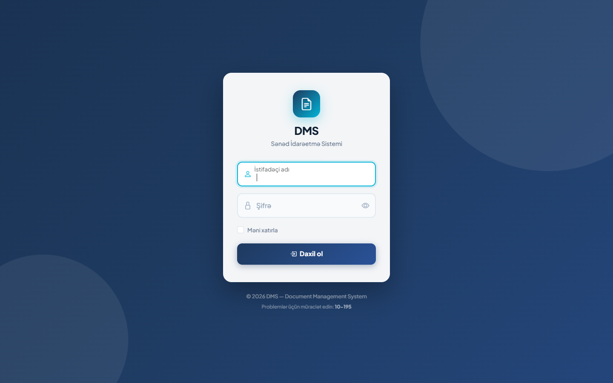
Giriş addımları:
- İstifadəçi adı xanasına istifadəçi adınızı daxil edin (məs.
admin,manager). - Şifrə xanasına şifrənizi daxil edin. Şifrəni görmək üçün sağdakı göz ikonuna basın.
- İstəsəniz Məni xatırla seçimini işarələyin — sistem sizi növbəti dəfə avtomatik tanıyacaq.
- Daxil ol düyməsinə basın.
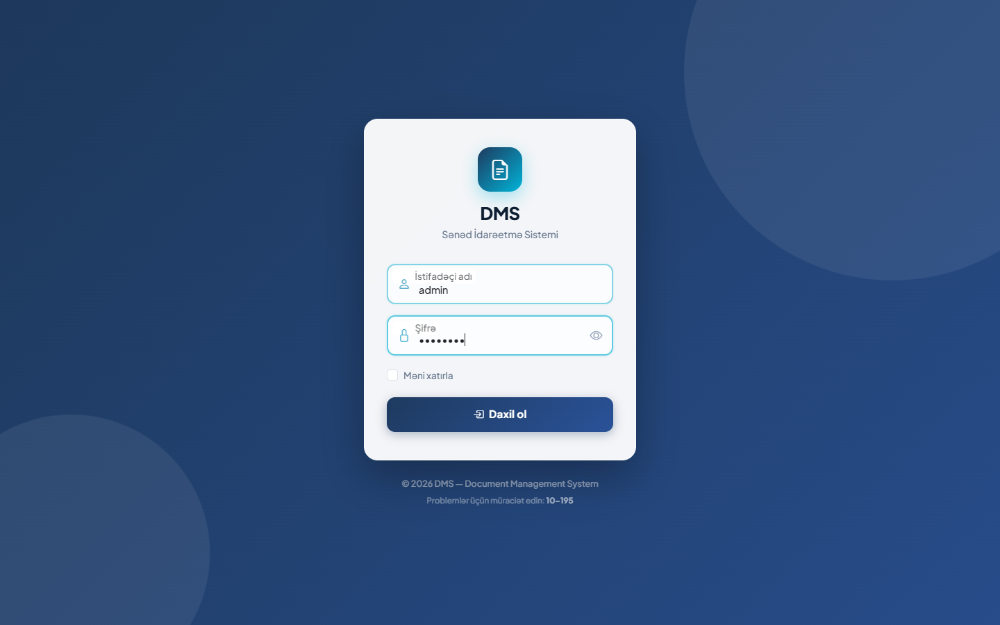
İstifadəçi rolları:
| Rol | Çıxış imkanları |
|---|---|
| Admin | Bütün bölmələrə tam giriş: hüquqi aktlar, icraçı paneli, təsdiq, hesabat, kataloqlar, istifadəçilər, aktivlik jurnalı |
| Menecer | Hüquqi aktlar, icraçı paneli, təsdiq gözləyənlər, hesabat, kataloqlar |
| İstifadəçi | Hüquqi aktlar, kataloqlar (yalnız oxuma) |
İdarəetmə Paneli — Ümumi Baxış
Sistemə daxil olduqdan sonra İdarəetmə Paneli açılır. Sol tərəfdə naviqasiya menyusu, sağda isə əsas məzmun sahəsi yer alır.
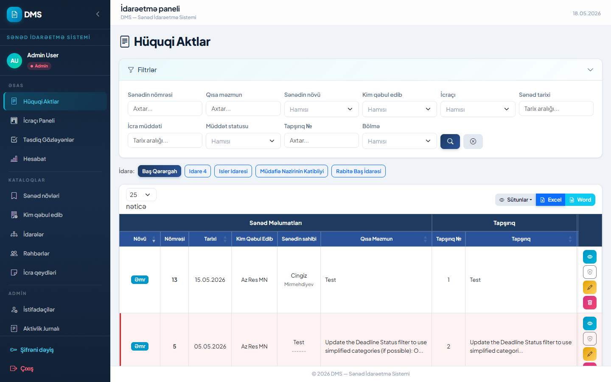
Hüquqi Aktlar
Sistemin əsas bölməsi olan Hüquqi Aktlar bütün qeydiyyata alınmış sənədləri — əmrlər, qərarlar, sərəncamlar — idarə edir. Hər sənəd üçün icra müddəti, icraçı, status izlənir.
Filtrlər paneli
Siyahının yuxarısındakı filtrlər paneli vasitəsilə axtarış apara bilərsiniz:
| Filtr | İzah |
|---|---|
| Aktın növü | Əmr, Qərar, Sərəncam və s. |
| Kim qəbul edib | Sənədi çıxaran qurum |
| Sənədin statusu | Müddətdədir / Bitib / Müddətsiz |
| Tarixlər | Başlanğıc və bitmə tarixləri üzrə aralıq |
| İcraçı | Tapşırıq verilmiş şəxs |
| Tapşırıq № | Nömrə üzrə axtarış |
Nişanlar (tablar)
Siyahı müxtəlif nişanlar üzrə bölünür:
- Baş Görəvlər — bütün əsas aktlar
- İcrada — hazırda icra edilənlər
- Müddəti Keçmiş Aktlar — gecikmiş sənədlər
- Müddəti Başa Çatanlar — bu günlərdə tamamlananlar
- Rədd Edilmiş Sənədlər — rədd edilmiş icra mərhələləri
Cədvəl sütunları
| Sütun | İzah |
|---|---|
| # | Sıra nömrəsi |
| Növü | Sənəd növü (Əmr, Qərar, Sərəncam) |
| Nömrəsi | Sənədin rəsmi nömrəsi |
| Tarixi | Qəbul edildiyi tarix |
| Qısa Məzmun | Sənədin qısa təsviri |
| İcraçı | Tapşırıq verilmiş şəxs |
| Göndərən | Tapşırığı yaradan istifadəçi |
| Tapşırıq № | Daxili tapşırıq nömrəsi |
| Tarixlər | İcra başlanğıc – bitmə tarixi |
| Əməliyyat | Bax / Düzəlt / Sil düymələri |
📤 İxrac (Export)
Siyahını Excel və ya Word formatında yükləmək üçün sağ üst köşədəki E Excel və W Word düymələrinə basın.
İcraçı Paneli
İcraçı Paneli icraçılara verilmiş tapşırıqların izləndiyi bölmədir. İcraçılar burada öz tapşırıqlarını görür, statuslarını yeniləyir və sənəd əlavə edə bilirlər.
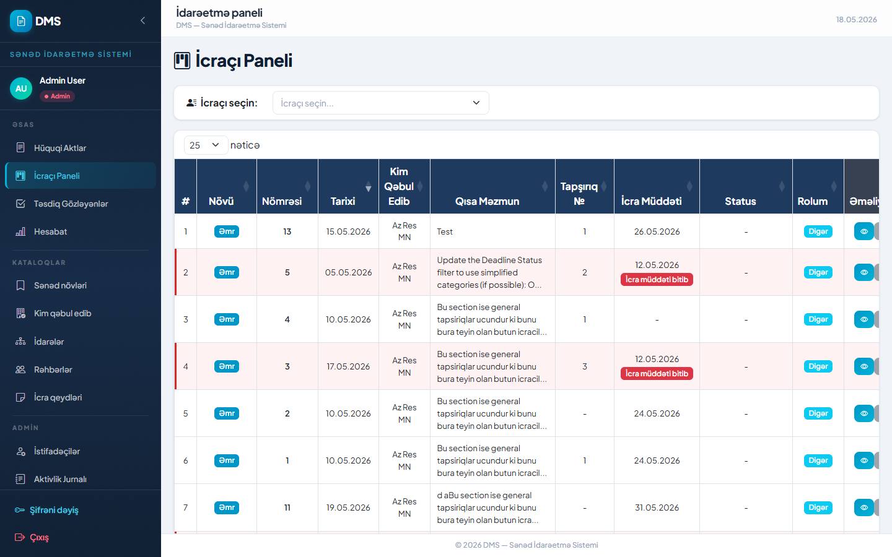
Əsas elementlər:
- İdarə seçin açılan siyahısından istəyinizə uyğun idarəni seçin — cədvəl avtomatik yenilənir.
- Hər sətirdə tapşırığın Növü, Nömrəsi, Tarixi, Qısa Məzmunu və İcra Müddəti görünür.
- Status sütununda tapşırığın mövcud vəziyyəti göstərilir:
- Yeni — tapşırıq yenicə daxil edilib
- İcrada — icra prosesindədir
- İcra edilib — tamamlanıb, təsdiq gözlənilir
- Gecikmiş — müddəti keçmişdir
- Tapşırığın ətraflı məlumatına keçmək üçün Bax düyməsinə, statusu yeniləmək üçün isə tapşırığı açıb dəyişiklik etmək mümkündür.
Təsdiq Gözləyənlər
Bu bölmə Menecer və Admin rollu istifadəçilər üçündür. İcraçıların yüklədikləri status yeniləmələri burada göstərilir və menecer onları Təsdiq və ya Rədd edə bilər.
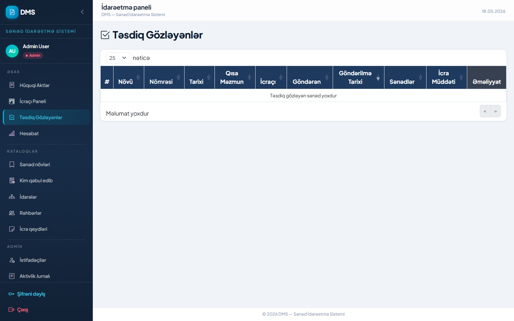
Sütunların izahı:
| Sütun | İzah |
|---|---|
| Növü | Sənəd növü |
| Nömrəsi | Sənəd nömrəsi |
| Tarixi | Sənədin tarixi |
| Qısa Məzmun | Tapşırığın qısa məzmunu |
| İcraçı | Tapşırığı icra edən şəxs |
| Göndərən | Statusu göndərən istifadəçi |
| Göndərilmə Tarixi | Statusun göndərilmə tarixi |
| Sənədlər | Əlavə edilmiş fayllar (klikləyərək yükləmək olar) |
| İcra Müddəti | Tapşırığın son icra tarixi |
| Əməliyyat | Təsdiq et / Rədd et düymələri |
Təsdiqləmə prosesi:
- Siyahıda təsdiqi gözləyən sətri tapın.
- Fayllar sütununda əlavə edilmiş sənədləri nəzərdən keçirin.
- Təsdiq et (yaşıl) düyməsinə basaraq icranı qəbul edin — və ya — Rədd et (qırmızı) düyməsinə basaraq geri qaytarın.
- Rədd edildikdə icraçıya bildiriş göndərilir, o yenidən icra statusu göndərə bilər.
Hesabat
Hesabat bölməsi bütün aktların statistik icmalını vizual şəkildə göstərir. Menecer və Admin rollu istifadəçilər üçündür.
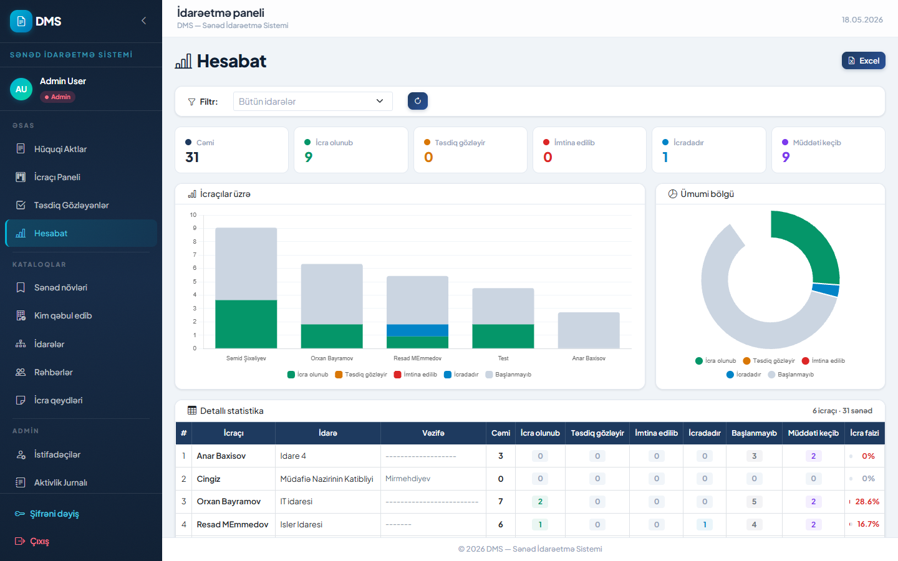
Hesabat elementləri:
| Element | İzah |
|---|---|
| Ümumi sayı | Sistemdəki ümumi akt sayı |
| Müddətsiz | Son tarixi olmayan aktlar |
| Müddəti keçmiş | Gecikmiş aktların sayı |
| Tapşırıqsız | Hələ icraçıya verilməmiş aktlar |
| Qrafik (bar chart) | İdarə üzrə akt paylanması |
| Donut qrafik | Ümumi vəziyyətin faizlə bölgüsü |
| Cədvəl | Hər idarə üzrə ətraflı göstəricilər |
Excel ixracı:
- Sağ üst köşədəki Excel düyməsinə basın.
- Fayl avtomatik yüklənəcək — filtrlərə uyğun məlumatları ehtiva edəcək.
Kataloqlar
Kataloqlar bölməsi sistemin istinad məlumatlarını — sənəd növlərini, idarələri, icraçıları və s. — idarə edir. Bu məlumatlar hüquqi akt yaradılarkən açılan siyahılarda görünür.
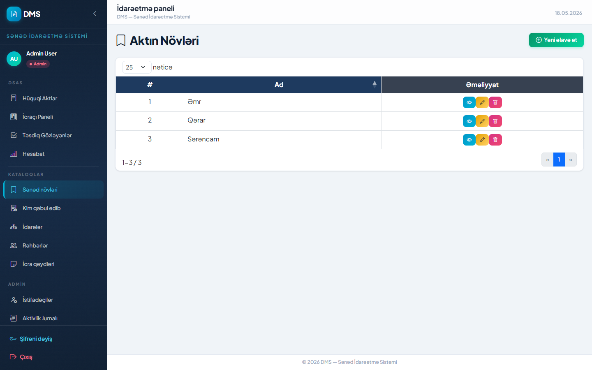
Kataloq bölmələri:
7.1 Sənəd növləri
Hüquqi aktların növlərini idarə edir: Əmr, Qərar, Sərəncam və s.
- Sol menyudan Sənəd növlərini seçin.
- Yeni növ əlavə etmək üçün Yeni əlavə et düyməsinə basın, adı yazın, Yadda saxla.
- Mövcud növü redaktə etmək üçün 🖊 (qələm) ikonuna, silmək üçün 🗑 (zibil) ikonuna basın.
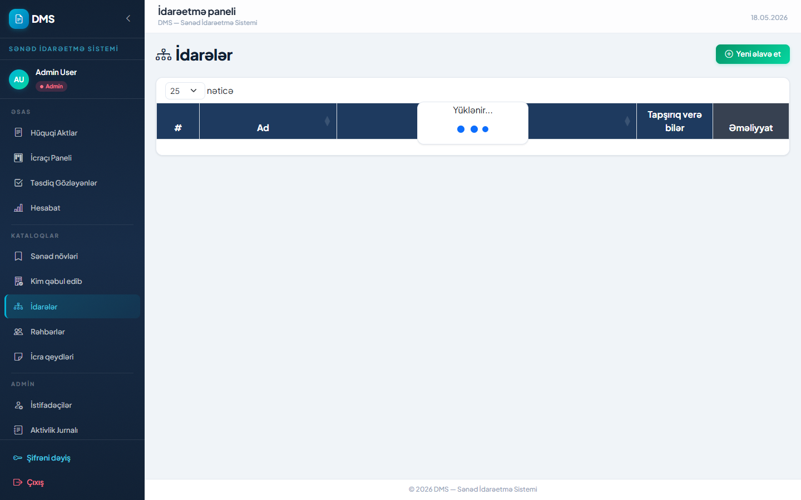
7.2 Kim qəbul edib (Sənədi çıxaran qurumlar)
Hüquqi aktı qəbul etmiş qurumların siyahısını saxlayır.
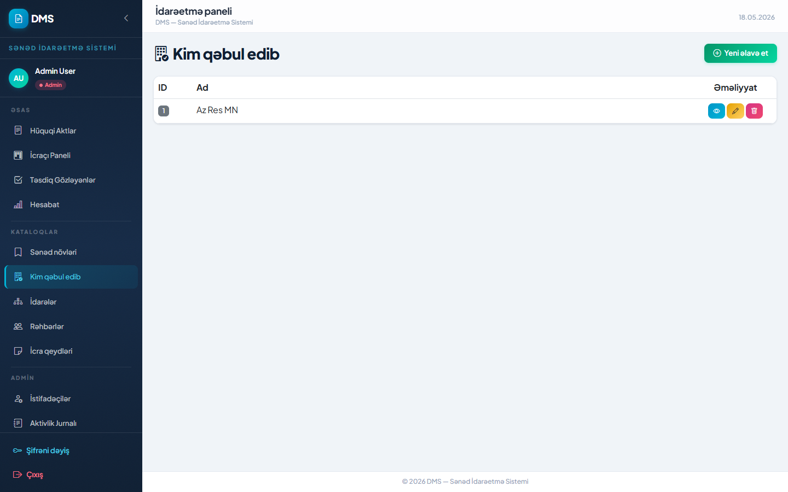
7.3 İdarələr
Sistemi istifadə edən idarə/departamentlər. Hər idarəyə rəhbər təyin oluna bilər.
7.4 Rəhbərlər (İcraçılar)
Tapşırıq verilə biləcək şəxslərin siyahısı. Hər icraçı bir idarəyə bağlıdır.
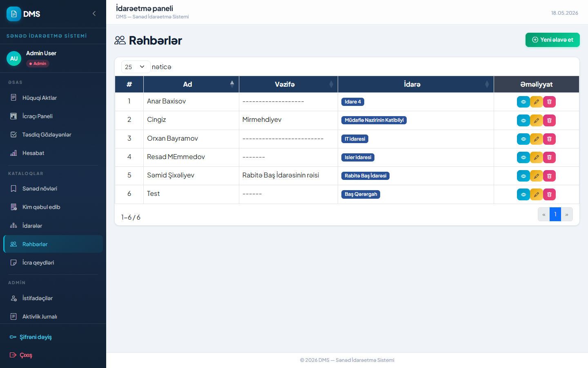
7.5 İcra qeydləri
İcra prosesindəki standart qeyd növlərini saxlayır (məs. «İcrada», «Tamamlandı» kimi xüsusi qeydlər).
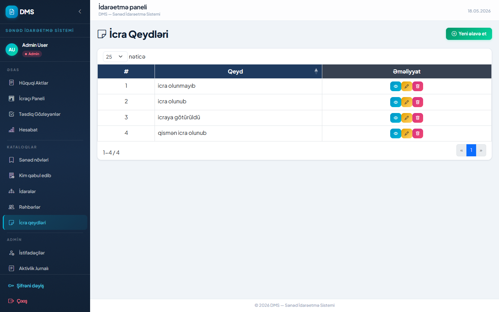
Admin — İstifadəçi İdarəetməsi
Bu bölmə yalnız Admin rolu üçün əlçatandır. Burada sistemdəki bütün istifadəçilər idarə olunur.
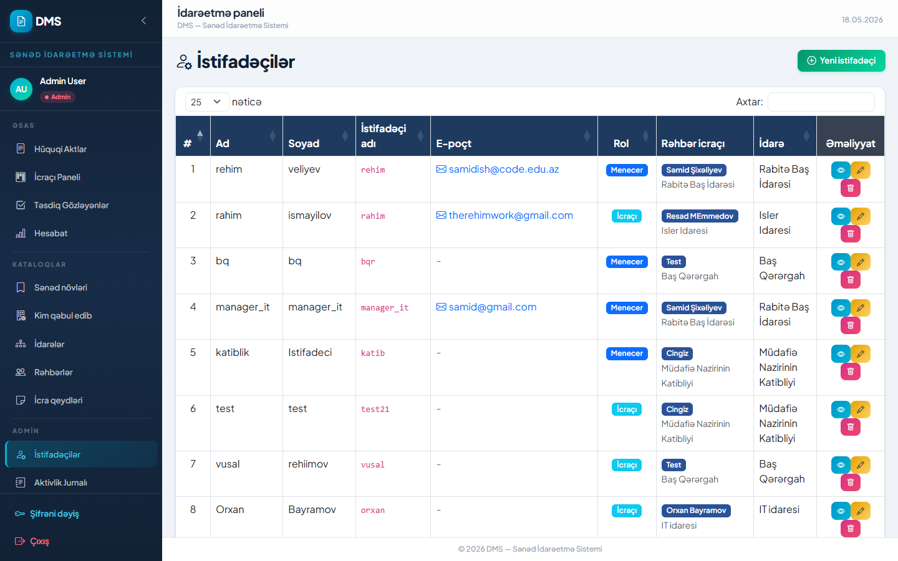
İstifadəçi cədvəlinin sütunları:
| Sütun | İzah |
|---|---|
| Ad / Soyad | İstifadəçinin tam adı |
| İstifadəçi adı | Sistemə giriş üçün unikal istifadəçi adı |
| E-poçt | E-poçt ünvanı |
| Rol | Admin / Menecer / İstifadəçi |
| Rəhbər icrası | Hansı icraçıya bağlı olduğu |
| İdarə | Bağlı olduğu idarə |
| Əməliyyat | Bax / Düzəlt / Şifrə sıfırla / Sil |
Yeni istifadəçi əlavə etmək:
- Sağ üst köşədəki Yeni istifadəçi düyməsinə basın.
- Ad, soyad, istifadəçi adı, e-poçt, şifrə, rol sahələrini doldurun.
- Lazım gəldikdə idarə və rəhbər icrasını seçin.
- Yadda saxla düyməsinə basın.
Admin — Aktivlik Jurnalı
Aktivlik Jurnalı sistemdə edilən bütün əməliyyatların tarixçəsini saxlayır. Yalnız Admin üçün əlçatandır.
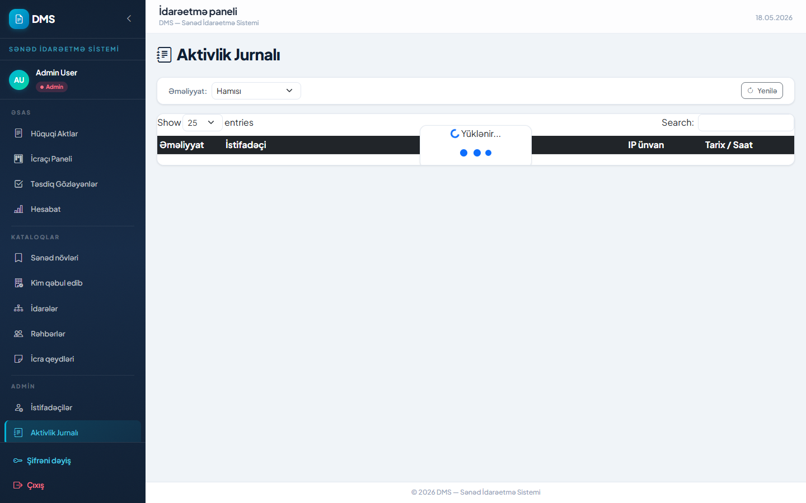
Jurnalda nə görünür:
| Sütun | İzah |
|---|---|
| Əməliyyat | Hansı əməliyyat edildiyi (giriş, çıxış, yeni akt, redaktə, silmə və s.) |
| İstifadəçi | Əməliyyatı edən istifadəçinin adı |
| IP ünvan | Əməliyyatın edildiyi cihazın IP ünvanı |
| Tarix / Saat | Dəqiq vaxt möhürü |
Filtrlər:
Əməliyyat növünə görə filtrləmək üçün yuxarıdakı Əməliyyat açılan siyahısını istifadə edin. Siyahını yeniləmək üçün Yenilə düyməsinə basın.
Şifrəni Dəyiş & Çıxış
Şifrəni dəyişmək:
- Sol menyunun alt hissəsindəki Şifrəni dəyiş bağlantısına basın.
- Açılan formada Mövcud şifrə, Yeni şifrə və Təkrar yeni şifrə xanalarını doldurun.
- Yadda saxla düyməsinə basın. Əməliyyat uğurlu olarsa təsdiq mesajı görünəcək.
@#$%) istifadə edin.
Sistemdən çıxmaq:
- Sol menyunun ən altındakı Çıxış bağlantısına basın.
- Sistem sizi avtomatik çıxarır və giriş səhifəsinə yönləndirir.